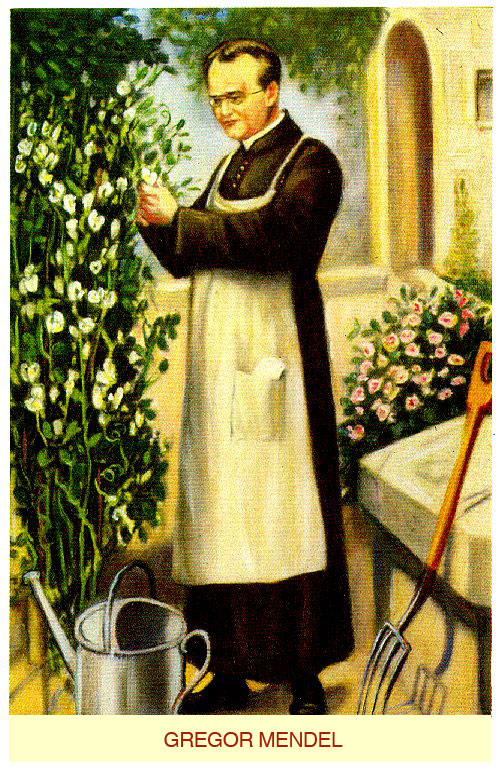
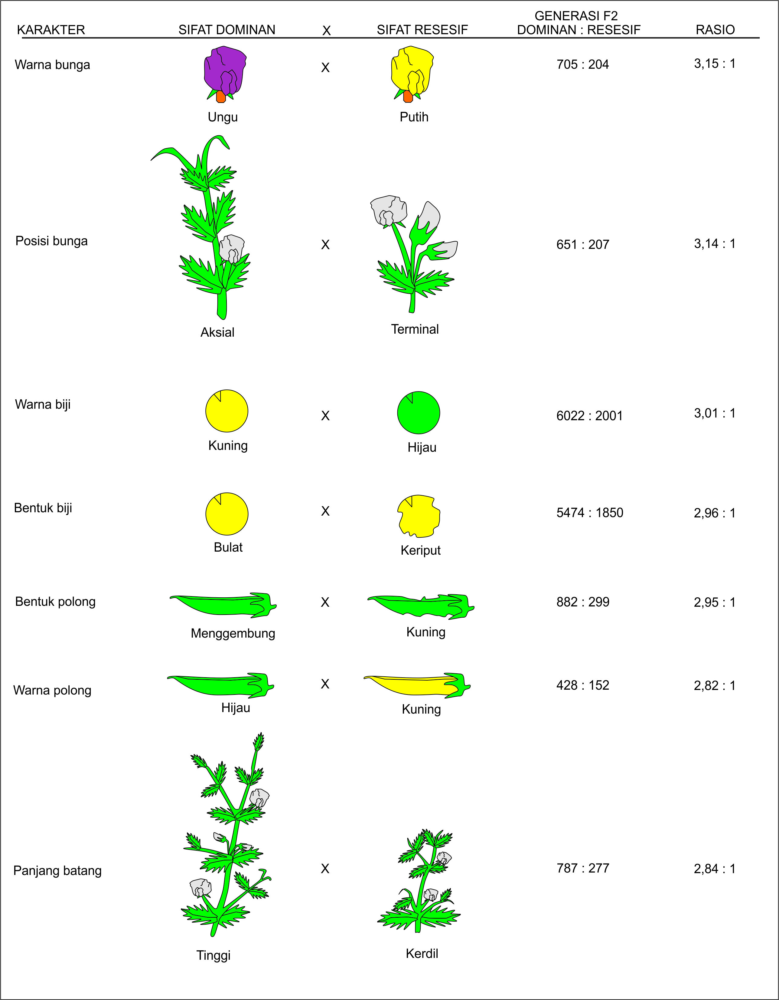

Sejarah Gregor Mendel

George Mendel tumbuh di pertanian kecil milik orangtuanya disebuah wilayah Austria yang sekarang bagian dari Republik Ceko.
Mendel sekolah di daerah pertanian, dia menerima pelatihan pertanian selain mendapatkan pendidikan dasar.
Pada tahun 1843, Mendel masuk Biara Augustinian. Setelah tiga tahun belajar biologi, Mendel ditugaskan ke sebuah sekolah sebagai guru temporer.
Dimasa hidupnya ada dua Profesor yang sangat penting baginya. Prof. Doppler mengajarkan penggunaan matematika untuk menjelaskan fenomena alam, dan Prof.
Unger membangkitkan ketertarikan Mendel terhadap variasi pada tumbuhan.
Tahun 1851, Mendel mulai tertarik terhadap penelitian kacang ercis yang memiliki banyak sifat yang dapat dilihat langsung dan mulai menanam kacang ercis di biara.
Sebagai contoh ada kacang ercis mempunyai bunga ungu dan ada bunga putih. Selama delapan tahun (1856-1864) Mendel melakukan penelitian persilangan pada tanaman ercis atau Pisum sativum (kacang kapri).
Mendel memilih tanaman ercis untuk percobaannya sebab masa hidup tanaman ercis setahun.
Mudah tumbuh, memiliki bunga sempurna sehingga terjadi penyerbukan sendiri yang akan menghasilkan galur murni (keturunan yang selalu memiliki sifat yang sama dengan induknya), dan mampu menghasilkan banyak keturunan.
Mendel melanjutkan penelitiannya yaitu dengan penyilangan dua varietas yang disebut hibridasi.
Penyilangan yang menghasilkan satu penurunan sifat terutama warna bunga tetapi pada satu jenis tumbuhan (penyilangan monohibrid).
Tumbuhan induk (generasi P) keturunan hibridnya sendiri menghasilkan generasi F1. Mendel biasanya mengamati sifat-sifat bawaan paling sedikut untuk tiga generasi yakni P, F1, F2.
Analisis kuantitatif Mendel pada tanaman F2 inilah yang terutama mengungkapkan dua prinsip dasar hereditas yang sekarang dikenal sebagai Hukum Segresi (Hukum Mendel I) dan Hukum Pemilahan bebas (Hukum Mendel II).
Tanaman ercis memiliki tujuh sifat dengan perbedaan yang mencolok seperti berikut.
- Batang tinggi atau kerdil (pendek).
- Buah polongan berwarna kuning atau hijau.
- Bunga berwarna ungu atau putih.
- Letak bunga aksial (sepanjang batang) atau terminal (pada ujung batang).
- Biji masak berwarna hijau atau kuning.
- Permukaan biji bulat atau berkerut.
- Warna kulit biji abu-abu atau putih.

Sumber
Buku Biologi Edisi 5 Jilid 1 Campbell, Reece, Mitchel